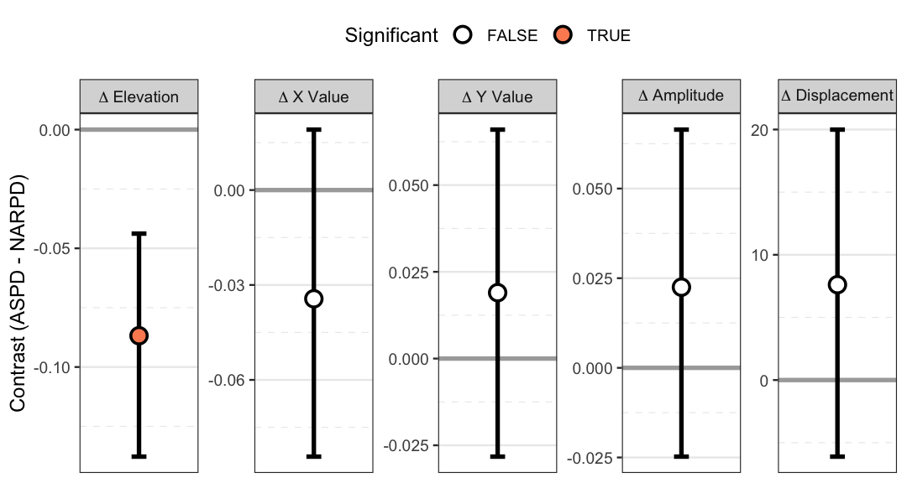

library(circumplex)
data("jz2017")
scales <- c("PA", "BC", "DE", "FG", "HI", "JK", "LM", "NO")Level: Advanced. Read “SEM-Based SSM Analysis” first.
Not yet peer reviewed. The invariance-gated latent contrast this page teaches is the package’s own proposal. Its authors have not yet published it in a peer-reviewed venue. Read it as a research tool, and state that status when you report results from it.
1. Overview
This page continues “SEM-Based SSM Analysis”, which fits the latent
profile of a measure with ssm_sem(). It teaches the second
product of the latent SSM, the invariance-gated latent contrast between
groups, and it places the method. The setup chunk loads
jz2017 and names the eight scales, as the previous page
did. Section 2, “Two questions about group differences”, separates the
observed contrast from the latent one. Section 3, “Invariance-gated
latent contrasts”, fits the invariance ladder and shows a comparison
that the gate refuses. It then shows a contrast of two measures within
one group, where no invariance gate applies. Section 4, “When to trust
it: limitations”, lists the assumptions that the latent layer rests on.
Section 5, “Relation to the literature”, places the method beside the
published circumplex models. The Wrap-up restates when a latent contrast
is computed and names the next page, and the References list the sources
cited.
2. Two questions about group differences
When you have groups, there are two distinct
estimands (quantities to be estimated), and circumplex
keeps them separate on purpose.
| Question | Estimand | Tool | Confounds |
|---|---|---|---|
| Do the groups’ measured profiles differ? | Observed contrast | ssm_analyze(contrast = TRUE) | Structural difference, differential reliability, and non-invariance are combined. |
| Do the groups’ constructs differ, granted the instrument measures the same thing in both? | Latent contrast | ssm_sem(contrast = TRUE) | Disattenuated and conditional on measurement invariance; not computed when invariance fails. |
Neither is more correct in the abstract. The observed contrast answers a question about scores and is always available. The latent contrast answers a question about constructs, but only if the instrument behaves the same way in both groups. When it does not, the honest answer is that the groups cannot be compared on the latent metric. That answer is not a number.
3. Invariance-gated latent contrasts
Before it computes a latent group contrast, ssm_sem()
fits an invariance ladder: configural, then metric, then scalar. It
tests each rung against the previous one with lavaan’s own nested-model
test (the scaled difference test under the robust estimator). The latent
measure-profile contrast requires metric
invariance (equal saturations across groups). The latent mean
contrast additionally requires scalar invariance. If the required rung
is rejected, the contrast is not computed.
On real data this gate does its job. Comparing the NARPD profile
across the Gender groups in jz2017 rejects
metric invariance. So ssm_sem() returns each group’s
separate profile and an explicit non-comparison verdict, rather than a
contrast:
set.seed(12345)
by_gender <- ssm_sem(
jz2017,
scales = scales,
angles = octants(),
measures = "NARPD",
grouping = "Gender",
contrast = TRUE,
boots = 300
)
by_gender
#>
#> # Latent (SEM-based) SSM
#>
#> Measurement model: scaled fixed-angle circumplex
#> Global fit (N = 1166, robust): chisq(34) = 287.272, p < 0.001
#> CFI = 0.938, RMSEA = 0.123, SRMR = 0.06
#>
#> Invariance ladder (gate: metric, alpha = 0.05):
#> rung chisq df cfi rmsea dchisq ddf p
#> configural 287.272 34 0.938 0.123 NA NA
#> metric 337.356 48 0.927 0.112 54.781 14 < 0.001
#> Verdict: metric invariance rejected
#> Test: Δχ²(14) = 54.78, p < 0.0001, alpha = 0.05
#> Result: these groups cannot be compared on this instrument's latent
#> metric
#> Contrast: the requested latent contrast was not computed
#> Profiles: the rows below are each group's separate (configural) latent
#> profile
#> Instead: the observed-score contrast from ssm_analyze() answers a
#> different question and remains available
#>
#> # Profile [NARPD: Female]:
#>
#> Estimate Lower CI Upper CI
#> Elevation 0.198 0.141 0.252
#> X-Value -0.023 -0.083 0.040
#> Y-Value 0.250 0.188 0.318
#> Amplitude 0.251 0.194 0.318
#> Displacement 95.206 81.443 110.519
#> Model Fit 0.966
#>
#>
#> # Profile [NARPD: Male]:
#>
#> Estimate Lower CI Upper CI
#> Elevation 0.313 0.243 0.376
#> X-Value 0.012 -0.046 0.076
#> Y-Value 0.199 0.146 0.250
#> Amplitude 0.199 0.147 0.257
#> Displacement 86.611 70.075 103.660
#> Model Fit 0.977The invariance ladder is printed with the decision, and no contrast
is rendered. The Verdict: line names the decision. The
labeled lines under it give the nested test, what the decision means for
comparing the groups, and what to use instead.
ssm_plot_contrast() on this object would have nothing to
draw. This is deliberate: there is no force = TRUE. If you
have a principled partial-invariance model, fit it yourself and pass it
to ssm_sem_parameters(). That function computes the
contrast from whatever multi-group fit you supply, and it leaves the
comparability claim to you.
The ladder table in the returned object also carries
dcfi, the change in the comparative fit index (CFI) from
the previous fitted rung. CFI compares the model’s fit with that of a
baseline model in which the variables are uncorrelated, and values near
1 mean good fit. dcfi is Cheung and Rensvold’s (2002)
secondary criterion. Its general rule rejects an invariance step when
CFI falls by more than .01. It is reported, never
gating. Comparability, the verdict, and the model that the
estimates are taken from are decided by the nested test alone. The two
criteria can disagree, and neither is a tiebreaker for the other. A
change in CFI is insensitive to sample size, but the nested test is not.
So in a large sample the nested test can reject a step whose CFI barely
moves.
The direction of the ΔCFI rule is worth stating carefully, because the article gives it two ways. Its Table 5 reports critical values that are the 1% lower tails of the simulated null distributions. So a ΔCFI at or below one of them is the 1%-level evidence against invariance, which is the sense used here. The sentence stating the general rule on the article’s p. 251 reads the opposite way relative to that same table. This package follows the simulation.
Read the retain/reject label narrowly on the occasions it appears.
Cheung and Rensvold simulated two groups, maximum likelihood (ML)
estimation, and multivariate normal data. They examined Type I error
only, not power, and robust CFI variants were not part of their study.
ssm_sem() therefore prints the dcfi and
cr columns and a short ΔCFI note only inside that envelope.
That is a two-group fit estimated by ML whose CFI is the plain,
non-robust one. Note that estimator = "ML" is necessary but
not sufficient. missing = "fiml" also makes lavaan report a
robust CFI, so a fit can be ML and still fall outside the envelope. The
default estimator is "MLR". So the ladder above prints no
dcfi column and no ΔCFI note. The values are still in
by_gender$invariance$table$dcfi with no label, and
by_gender$invariance$dcfi_scope records the fields that
show which condition applies. The same withholding covers a non-ML
estimator such as "GLS". Its CFI is plain-named, but its
fit function is not the one that the criterion was simulated under. That
is a deliberate refusal rather than a gap. Extending the cutoff to a
robust index, another estimator, or three or more groups would take
simulation work that nobody has done.
When invariance is not the obstacle, the contrast is computed. An example is a contrast of two measures within one group, where no cross-group invariance is at stake. That contrast behaves like the observed contrast (second measure minus first, displacement differences via the circular branch machinery):
set.seed(12345)
contrast <- ssm_sem(
jz2017,
scales = scales,
angles = octants(),
measures = c("NARPD", "ASPD"),
contrast = TRUE,
boots = 500
)
contrast
#>
#> # Latent (SEM-based) SSM
#>
#> Measurement model: scaled fixed-angle circumplex
#> Global fit (N = 1166, robust): chisq(22) = 317.867, p < 0.001
#> CFI = 0.935, RMSEA = 0.114, SRMR = 0.068
#>
#> # Profile [NARPD]:
#>
#> Estimate Lower CI Upper CI
#> Elevation 0.248 0.210 0.295
#> X-Value -0.009 -0.052 0.032
#> Y-Value 0.231 0.191 0.272
#> Amplitude 0.231 0.193 0.272
#> Displacement 92.119 82.715 103.513
#> Model Fit 0.974
#>
#>
#> # Profile [ASPD]:
#>
#> Estimate Lower CI Upper CI
#> Elevation 0.161 0.115 0.207
#> X-Value -0.043 -0.092 -0.002
#> Y-Value 0.250 0.208 0.295
#> Amplitude 0.254 0.216 0.298
#> Displacement 99.732 90.351 111.188
#> Model Fit 0.978
#>
#>
#> # Contrast [ASPD - NARPD]:
#>
#> Estimate Lower CI Upper CI
#> Δ Elevation -0.087 -0.138 -0.044
#> Δ X-Value -0.034 -0.084 0.019
#> Δ Y-Value 0.019 -0.028 0.066
#> Δ Amplitude 0.022 -0.025 0.066
#> Δ Displacement 7.613 -6.113 19.993
#> Δ Model Fit 0.003
ssm_plot_contrast(contrast)
The contrast block reports the difference in each SSM parameter with its confidence interval. As with the observed contrast, an elevation or amplitude difference whose interval excludes zero is a difference in that parameter. The displacement difference is reported on the estimate’s angular branch. So its interval endpoints can legitimately fall outside ±180° near the boundary, while still containing the estimate.
4. When to trust it: limitations
The latent layer buys disattenuation at the price of a set of assumptions. The documentation states them, and the vignette should too.
-
Model-conditional. Every latent quantity is
conditional on the fixed-angle model being adequate. Read the global fit
first. Wendt et al.
- give a real-data benchmark. They reported RMSEA (a misfit index, where lower is better) between .075 and .111 across four large samples. Their model was the fixed-loading circumplex confirmatory factor analysis (CFA), and these values show a real but imperfect approximation. Their model targets the octants’ own latent structure, not an external measure’s profile. So the number is a benchmark, not a like-for-like comparison. The example fits here are of the same order (RMSEA around .12). They should likewise be read as approximations, not exact structure.
-
Fixed angles are theoretical. Departures from the
theoretical geometry load into misfit, not into the angles. Use
cpm_fit()to examine geometry. - The scaled tier assumes latent-plane stationarity and does not test it. That tier fixes the plane factors isotropic and orthogonal, so anisotropic latent dispersion surfaces only as global misfit. The strict tier frees the factor variances and covariances.
- The scaled tier assumes the general factor is orthogonal to the plane. A true general-factor lean surfaces as misfit under the scaled tier. Use the strict tier to model it.
- Displacement and fit have the disattenuated meanings of Section 6 of “SEM-Based SSM Analysis”, not the naive “angle in latent space” and “cosine-ness” readings.
- Disattenuated correlations can be large. Removing attenuation moves correlations toward ±1. Values at or beyond 1 signal misspecification and are refused rather than summarized.
-
Invariance gating is a modeling decision with a
default test, not an oracle. The observed contrast remains available and
answers its own question. The secondary
dcficriterion gates nothing. It prints beside the nested test only for a two-group fit estimated by ML with a plain CFI. Even then it prints only when a rung has adcfivalue. Its .01 cutoff is validated only for two-group, ML, multivariate-normal fits, for Type I error only. The package withholds the verdict everywhere else rather than extrapolating it.
5. Relation to the literature
The nearest published models are the confirmatory factor analyses of the interpersonal circumplex itself. Wendt et al. (2019) fit a three-factor circumplex CFA with fixed unit-cosine plane loadings, which is the shape of this package’s strict tier. They fit it across four large samples. They found the fully dimensional model competitive with categorical (types of people) and hybrid (types and dimensions together) alternatives. Their estimand, though, is the latent structure of the octant scales and persons’ factor scores, not an external measure’s disattenuated profile. Their model is context for the strict tier, not a validation target for the SSM estimand.
At the level of a single disattenuated correlation, Moss (2026) showed the following. Treating reliability as a known constant collapses interval coverage (to roughly .35 in one scenario). Propagating reliability uncertainty instead restores nominal coverage. That is exactly the logic behind fitting the model and propagating its full covariance, rather than plugging in reliability point estimates. One estimand caveat applies. Moss’s disattenuated correlation corrects both variables for unreliability. The latent SSM here corrects only the scale side, and the external measure remains an observed variable. So the two are relatives, not the same quantity.
Finally, the two model families in this package meet at a single
point. At that point the general factor is orthogonal to the plane, the
saturations are equal, and the angles are equally spaced. At that point,
the fixed-loading circumplex CFA coincides with the one-harmonic,
equal-communality version of Browne’s (1992) circumplex model that
cpm_fit() estimates. The SEM-based SSM sits on the
fixed-angle side of that boundary. To cross to freely estimated angles,
use cpm_fit().
Wrap-up
ssm_sem() computes a latent group contrast only when the
invariance ladder supports it. When the ladder does not, it returns each
group’s separate profile with a verdict. A contrast of two measures
within one group needs no invariance gate. The next page to read is
“Axes Reliability”, which asks how reliably an instrument measures its
two axes.
References
Browne, M. W. (1992). Circumplex models for correlation matrices. Psychometrika, 57(4), 469–497.
Cheung, G. W., & Rensvold, R. B. (2002). Evaluating goodness-of-fit indexes for testing measurement invariance. Structural Equation Modeling, 9(2), 233–255.
Moss, J. (2026). Inference for disattenuated correlations. Applied Psychological Measurement. Advance online publication. https://doi.org/10.1177/01466216261440511
Wendt, L. P., Wright, A. G. C., Pilkonis, P. A., Nolte, T., Fonagy, P., Montague, P. R., Benecke, C., Krieger, T., & Zimmermann, J. (2019). The latent structure of interpersonal problems: Validity of dimensional, categorical, and hybrid models. Journal of Abnormal Psychology, 128(8), 823–839.